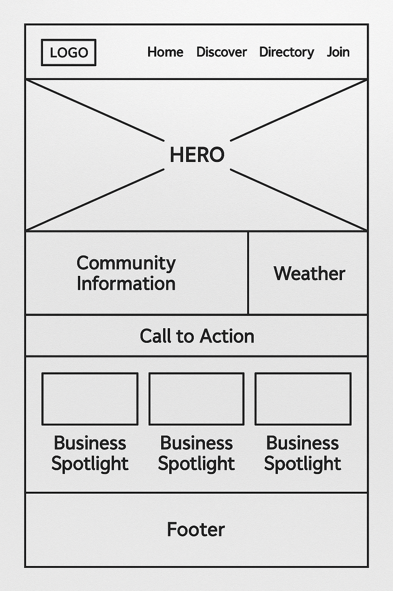

Site Name
Tema Chamber of Commerce Site Plan
This name was selected because it reflects the geographic location—Tema, a key industrial city in Ghana—and includes the word "Chamber" to indicate the focus on business networking and development. It establishes clear relevance and authority within the region.
Site Purpose
- To promote and support local businesses by providing a directory, resources, and exposure to the community and visitors.
- To serve as a platform for announcing events, business news, and government initiatives that affect commerce in the Tema area.
Scenarios
- What events will the chamber be holding this month that promote business-to-business networking?
- Where can I find contact information for the chamber's board of directors?
- What investment opportunities are available in Tema?
Color Schema
- Primary Color: #004b87 (Dark Blue) - Used for headers, footer background, and buttons to convey professionalism and trust.
- Accent Color: #f2c94c (Gold) - Used for highlights, icons, and section dividers to give a vibrant and energetic touch.
Typography
- Poppins (Google Font) - Used for all headings and body text to maintain a clean, modern, and professional look.
Wireframe desktop
This is a basic wireframe mockup to visualize the layout of the homepage for the Tema Chamber of Commerce website on a desktop.
Wireframe mobile
This is a basic wireframe mockup to visualize the layout of the homepage for the Tema Chamber of Commerce website on a mobile.